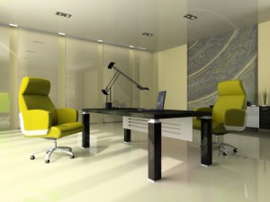

Ergonomische Beleuchtung im Büro
Ergonomisch richtige Beleuchtung im Büro für mehr Leistungsfähigkeit

Bei meinen Besuchen bei Kunden vor Ort wird mir immer wieder deutlich, dass zur Büroorganisation so viel mehr gehört, als „nur“ Prozesse optimieren. Nur Mitarbeiter, die unter optimalen Bedingungen arbeiten, können Höchstleistungen bringen und sind motiviert sich und das Unternehmen immer weiter zu entwickeln. Zu optimalen Bedingungen gehört neben dem richtigen Mobiliar auch die ergonomisch richtige Beleuchtung. Dafür gibt’s heute Tipps von der Lichtfachfrau Daniela Schär (www.lightingdeluxe.de):Wer beruflich viel mit dem Computer arbeitet, wird die ungewünschten „Nebenwirkungen“ dieser Tätigkeit schon das eine oder andere Mal an sich selbst beobachtet haben: neben Problemen mit der Skelettstruktur und dem Kreislaufsystem leiden vor allem die Augen unter dieser einseitigen Beanspruchung. Denn das lange Schauen auf relativ kurzer Distanz strengt die Augenmuskulatur an, was durch schlechte Lichtverhältnisse zusätzlich verstärkt wird – mit der Folge, dass wir zuweilen unter Müdigkeit, Konzentrationsschwierigkeiten oder sogar Kopfschmerzen und schwindender Sehkraft leiden.
Dabei sind die Augen unser wichtigstes Sinnesorgan: mit ihrer Hilfe nehmen wir schließlich gut 80 Prozent aller Reizinformationen wahr, die im Alltag auf uns einströmen. Zudem haben empirische Untersuchungen belegt, dass das über die Augen – genauer über die sogenannten Ganglienzellen – wahrgenommene Sonnenlicht einen bedeutenden Einfluss auf unseren Biorhythmus hat und somit auch unsere Leistungsfähigkeit mitbestimmt.
Da aus diesen Gründen gerade Büroangestellte auf die Gesundheit ihrer Augen achten sollten, wollen wir lhnen einige wissenswerte Hinweise und praktische Tipps dafür geben, wie sie die Beleuchtung in ihrem Büro unter ergonomischen Gesichtspunkten besser gestalten können.
Exkurs: Wie wirkt sich Licht auf unseren Biorhythmus aus?
Um besser zu verstehen, wie genau sich das Licht auf unser Wohlbefinden und unsere Leistungsfähigkeit auswirkt, ist zunächst ein kleiner Exkurs in die Biologie hilfreich. Die oben erwähnten Ganglienzellen, welche sich neben den Stäbchen und Zäpfchen als dritter Rezeptortyp auf unserer Netzhaut verteilen, enthalten das Protein Melanopsin, welches besonders empfindlich auf den erhöhten Blauanteil des Tageslichtspektrums reagiert, der nur in den Vormittagsstunden zu messen ist.
Diese Information wiederum wird an das Gehirn und dort an die Steuerzentren des vegetativen Nervensystems gesendet. Daraufhin wird die Produktion des Hormons Melantonin unterdrückt, weswegen das in den frühen Morgenstunden produzierte Hormon Cortisol seine Wirkung besser entfalten kann. Und während Melantonin auf unseren Organismus beruhigend wirkt und uns abends auf den Feierabend einstimmt, aktiviert das Cortisol unsere Körperfunktionen, so dass auch wir aufmerksamer und konzentrierter bei der Arbeit sind.
So viel Tageslicht wie möglich!
Auf Grund der positiven Wirkung des Lichtes auf unsere allgemeine Gesundheit besteht ein wichtiger Grundsatz für die ergonomische Beleuchtung im Büro natürlich darin, so viel Tageslicht wie möglich für den Arbeitsplatz zur Verfügung zu stellen, ohne dass hierbei direkte oder indirekte Blendungen zu einer Einschränkung des Sehkomforts führen.
Schon bei der Auswahl der Büroräume sollte man daher auf deren Lage im Gebäude achten und etwa Räumlichkeiten in den oberen Stockwerken denen im Erdgeschoss vorziehen und Büroräumen mit südöstlicher bzw. südwestlicher Ausrichtung den Vorrang gegenüber solchen mit Blick gen Norden geben.
Befinden sich Büroräume in Gebäudebereichen, zu denen kaum Sonnenlicht dringt, so können vorausschauende Architekten immer noch mittels Tageslichtleit- und -lenksystemen Abhilfe schaffen. Im ersteren Fall wird das Sonnenlicht mit Hilfe von Spiegeln, Glaskuppeln, Prismen und Lichtschächten samt hoch reflektierender Innenbeschichtung in das Innere des Gebäudes geleitet, wo es eine sehr angenehme Lichtatmosphäre schafft.
Im Falle von Tageslichtlenksystemen wird das Licht etwa mittels spezieller Jalousien und hoch reflektierender Deckenelementen in die Tiefe eines Raumes gelenkt, um dort die Beleuchtungsstärke zu erhöhen. Die Jalousien bestehen hierbei aus einem oberen und unteren Teil, die unabhängig voneinander bedient werden können; der untere Teil kann dementsprechend als Blendschutz für die fensternahnen Arbeitsplätze genutzt werden, während der obere Jalousieteil mit konkav geformten und mit hoch reflektierender Folie beschichteten Lamellen das Tageslicht ins Rauminnere leitet.
Künstliches Licht für eine bessere Leistungsfähigkeit
Das Wissen um die aktivierende und leistungssteigernde Wirkung des natürlichen Lichtes will man auch für die künstliche Beleuchtung nutzen. Hierfür wurden dynamische Beleuchtungslösungen entwickelt, welche die Veränderungen des natürlichen Lichtes über den Tag simulieren. So strahlten die Büroleuchten vormittags ein helles Licht mit hohem Blauanteil aus, während sie zum Nachmittag hin ein zunehmend wärmeres Licht mit höherem Rotanteil aufweisen. Dem Mittagstief wirkt die dynamische Beleuchtung entgegen, indem die Beleuchtungsstärke vorübergehend auf etwa 1.000 Lux angehoben wird und das Licht gleichzeitig die Lichtfarbe Tageslichtweiß bzw. kaltweiß annimmt.
Die Lichtsteuerung erfolgt hierbei vollautomatisch; über Sensoren wird zudem die Anwesenheit der Mitarbeiter registriert und wenn sich längerer Zeit keine Personen mehr im Raum befinden, wird das Licht ausgeschaltet.
Dass die dynamische Beleuchtung sich positiv auf die Konzentration und Produktivität der Mitarbeiter auswirkt, konnte durch empirische Studien bewiesen werden. Doch hat dieses ergonomisch sinnvolle Beleuchtungskonzept auch einen erkennbaren Nachteil gegenüber der normgerechten Bürobeleuchtung, die für den Arbeitsplatz im Büro allgemein eine Beleuchtungsstärke von lediglich 500 Lux vorschreibt. Im Vergleich zu dieser können die Energiekosten für eine dynamische Beleuchtung unter Umständen um bis zu 25 Prozent höher ausfallen. Energieeffizienz und hohe Beleuchtungsqualität halten sich jedoch die Waage, wenn der Arbeitsbereich direkt beleuchtet wird und die Umgebung mittels dynamischer, tageslichtgesteuerter Beleuchtung vor allem indirekt erhellt wird, indem weiß gestrichene Wände bestrahlt werden und das Licht in den Raum reflektieren.
Lesen Sie im nächsten Artikel: Weitere Tipps für künstliches Licht
Weitere Artikel

Gruselige Bürohelfer – Weg mit der Verschwendung
Als ich neulich dieses Plakat gesehen habe, hat es mich ordentlich gegruselt. Mein ersten Gedanken: Häßlich, altmodisch und Verschwendung pur! Wenn Sie verstehen wollen, was meine Arbeit, meinen Anspruch ausmacht, dann müssen Sie …

Personalverwaltung optimieren
Die Personalverwaltung ist wichtiger Bestandteil eines jeden Unternehmens. Sie verursacht jedoch häufig auch hohen Arbeitsaufwand, der vor allem bei schlechter Organisation oder fehlender IT verwirrend und kompliziert werden …